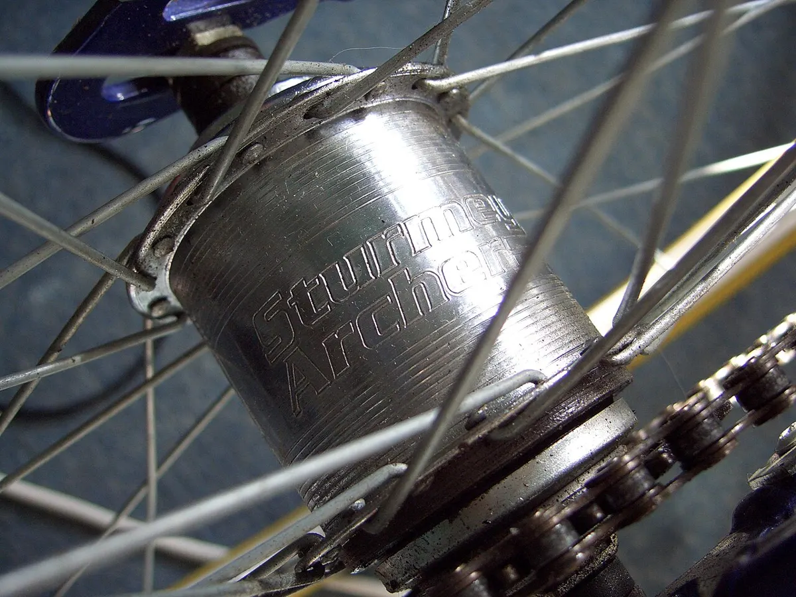

Инструкция · Колёса и шины
Sturmey-Archer AW: снятие колеса, замена камеры и настройка индикаторной цепочки
Инструкция для классических трёхскоростных втулок Sturmey-Archer (AW и аналогов) с индикаторной цепочкой — тонкой цепочкой, которая вкручивается в правый конец оси. У новых моделей Sturmey-Archer подключение троса другое — смотрите инструкцию вашей модели.

⚠ Важно
- Не ездите с проскальзывающей передачей: «холостые» провороты педалей могут привести к падению и износу механизма.
Пошагово
- 1Переключитесь на 3-ю передачу — трос ослабнет.
- 2Отверните контргайку на регулировочной муфте троса и открутите муфту с индикаторной цепочки.
- 3Выкрутите индикаторную цепочку из оси против часовой стрелки (пальцами). Не теряйте её: без цепочки втулка не переключается.
- 4Если есть ножной тормоз или барабанный тормоз — отсоедините его тягу/трос от пера рамы.
- 5Ослабьте гайки оси, сдвиньте колесо вперёд, снимите цепь и выньте колесо. Запомните порядок шайб.
- 6
- 7Установите колесо, натяните цепь (небольшой провис), выставьте колесо по центру и затяните гайки.
- 8Вкрутите индикаторную цепочку в ось до упора от руки и отверните примерно на пол-оборота, чтобы цепочка шла прямо к ролику троса без перекоса.
- 9Накрутите регулировочную муфту троса на цепочку.
- 10Переключите шифтер на 2-ю передачу. Посмотрите в окошко гайки оси (или на торец оси): торец толкателя должен стоять точно вровень с торцом оси.
- 11Регулируйте муфтой: если толкатель утоплен — натяните трос, если выступает — ослабьте. Затяните контргайку.
- 12Проверьте все три передачи на ходу. Проскальзывание на 2-й передаче под нагрузкой обычно означает неточную настройку.